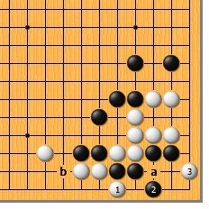
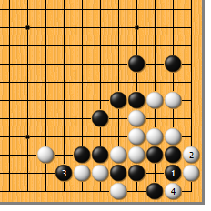
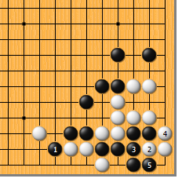
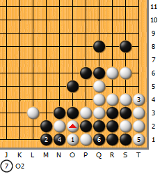
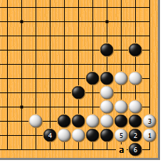
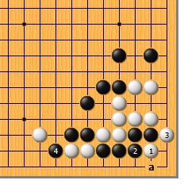
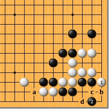

|  |  | |
| 图1 白1扳，好手！黑2只好虎。黑2如于a位粘，白b位退，黑局部不活，对杀也是黑不利。接下来，白3点，又是妙手…… | 图2 黑1如团，白2退。黑局部不活，只好3位扳吃白两子，白4扑，成劫。此为正解。
| |
|
 |
 | |
图3 黑1直接扳，又将如何？如此，白2冲、4渡，黑要杀白，只有5位破眼，白看起来不行……
| 图4 白1粘，使出“杀手锏”。黑2如立，白3、5从后面紧气，黑6提时，白7在1的上位断，是“倒脱靴”！ | |
|
 |
 | |
图5 白1先点，则次序错误。黑2拐，白3渡过时，黑4扳下。白5扑，黑如a位提，也是打劫。然而，黑有了6位立的变招，白无论如何挣扎，总归杀不过黑。 | 图6 白1直接夹，也是只图一时痛快的下法。黑2粘，白3渡时，黑4扳，白简单不行。白3如于4位退，黑a位打，是净活。
| |
|  | 您的高见 | |
图7 白1扳，是步骗着，黑要小心应对。黑2跳，是冷静的好手，先守住自己的弱点，接下来a、b成见合。黑2如于c位拐，白就生出了2位顶的手筋！黑如不想打劫而于b位遮断，白d位先手破眼，黑即不行。 |